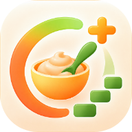

Обновление ЕмПрикорм
Эта страница помогает загрузить новую версию, если в дневнике не появляется кнопка обновления.
Сначала сохраните незавершённые записи и закройте остальные вкладки и окна ЕмПрикорм, включая установленное приложение.
Дневники остаются на этом устройстве. Данные сайта удалять не нужно.
Проверяем обновление…
Страница обновления · версия 1.0.16
Если проверка не проходит, сохраните текст сообщения и сообщите автору.